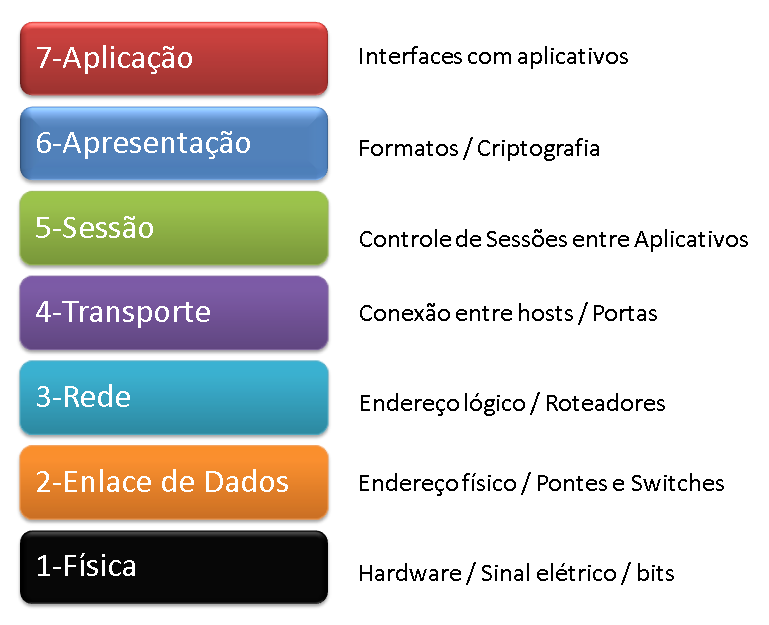

OSI
O modelo de interconexão de sistemas abertos (OSI) é um modelo conceitual criado pela Organização Internacional de Normalização que permite que diversos sistemas de comunicação se comuniquem usando protocolos padronizados.
1-CAMADA FÍSICA
Nesta camada são especificados os dispositivos, como hubs e os meios de transmissão, como os cabos de rede.
2-ENLACE
Nesta camada, os dados recebidos do meio físico são verificados para ver se possuem algum erro e se possuírem, esse erro pode ser corrigido.
3-REDE
É nesta camada que temos o endereçamento IP de origem e de destino, ela também pode priorizar alguns pacotes e decidir qual caminho seguir para enviar seus dados.
Essa camada basicamente controla o roteamento entre a origem e destino do pacote.
4-TRANSPORTE
Esta camada lida muito com a qualidade do serviço para que os dados sejam entregues com consistência, isto é, sem erros ou duplicações. Protocolos muito comuns dessa camada são os protocolos TCP em UDP. O primeiro garante a entrega da mensagem, diferente do segundo.
5-SESSÃO
Está camada é responsável por estabelecer e encerrar a conexão entre hosts. É ela quem inicia e sincroniza os hosts.
6-APRESENTAÇÃO
Está é a camada responsável por fazer a tradução dos dados para que a próxima camada os use. Nesta camada temos a conversão de códigos para caracteres, a conversão e compactação dos dados, além da criptografia desses dados, caso necessite.
7-APLICAÇÃO
Nesta camada temos os programas que garantem a interação humano-máquina. Nela conseguimos enviar e-mails, transferir arquivos, acessar websites, conectar remotamente em outras máquinas, entre outras coisas.
